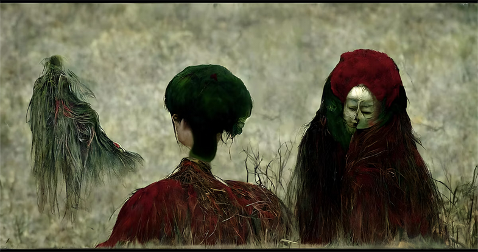

VQGAN Works
A selection of my earliest successes with VQGAN and CLIP-guided diffusion (2021–2022). Some pieces fall under the category of post-photography, beginning as photographs or drawings before transformation. Click each image to view its token and additional info.

Cognizance | Objkt

Veracity | Objkt

Philosopher | Objkt

Abandon | Foundation

Veiovis Underworld | Foundation

Act of Defiance | Foundation